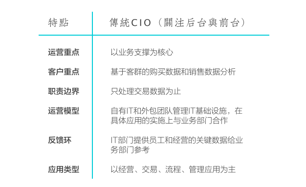
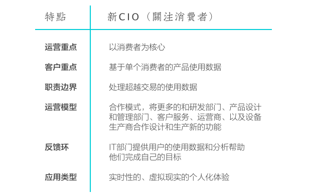
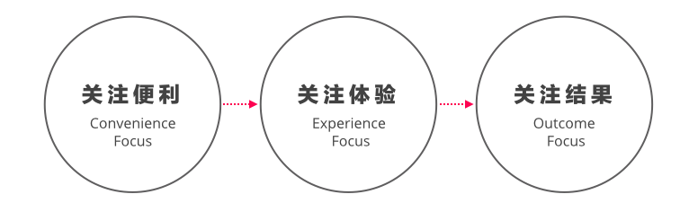
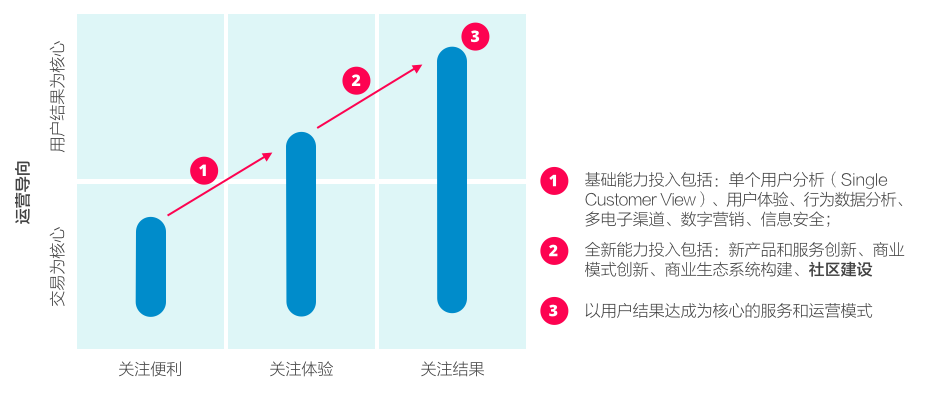

本篇是2013年PwC关于IoT报告中的第三篇，讨论首席信息官在“后交易关系”时代中的领导力，以及IT组织的职责变化。
CIO leadership in post-transaction relationships: IT's role in customer engagement
通过植入在产品或消费环境中的传感器，消费或使用过程中的数据被企业所获得、分析、并作为改进服务和产品的依据，品牌和消费者之间建立一种超越购买行为的关系。
全新的CIO
而这样新的消费者关系对作为企业IT组织负责人CIO提出了全新的要求。
在以往，CIO的职责绝大部分是帮助完成企业的目标，包括：
- 数字销售渠道即电子商务；
- 供应链和分销商管理；
- 数字化的客户服务。
而当IoT技术的发展，销售之后的产品使用与交互数据能够被及时收集与分析，新的客户关系模式产生时，CIO的关注点将逐步由”业务“过度到”消费者“。
正如互联网和移动互联网技术导致CIO的第一次转型，即从关注“技术”到关注“业务”，此次“业务”到“消费者”的转型也是技术导致的“数据革命”：
- 新的数据收集方式：从业务人员手工定时采集输入到传感器实时收集；
- 新的数据存储方式：从文件备份式存储，到云端的即时存取；
- 新的数据交互方式产生的更多触点：从单一的产品单点使用，到搭配互通的多种服务使用；
- 新的数据传输方式：从内部系统间数据集成，到通过外部网络汇聚由API统一处理；
- 新的数据分析方式：从简单的数据分析，到基于大数据的海量分析。
换言之，CIO将更加关注消费者的需求是否被达成。
新的机会
传统CIO的职责由业务划分来决定，支持业务成为工作核心，主要有以下特点：

当客户关系（Customer Engagement）的主要维护工作由业务部门完成的时候，CIO主要负责后台（Back Office）和前台（Front Office）的工作，对业务部门而言IT部门的作用依然是“支撑”，而当技术能够影响到更长远的用户关系中，IT部门的职责就将跨越“业务支撑”。
例如，为了推送更加准确的信息，亚马逊的智能家居产品Echo每两周根据与用户的沟通学习进行更新，这种学习过程是需要IT部门通过技术手段完成的。
售后客户关系维护已经不只是在以下情况下才会发生：
- 出现故障；
- 产生新的购买需求。
而是深入到消费者使用产品和服务的全过程，CIO所在的IT部门产生新的机会，他将不限于公司内部，而是“走出办公室”来到更加广阔的消费者使用场景中，这里的新机会有：

新的业务需求
面向全新的售后关系，业务也需要在一定程度上进行演进，最显著的挑战不单单在数据和创新上，也在于业务部门是否能够有有效的流程和运营模型，去管理通过实时数据进行维护的客户关系，以及基于此不断演进的服务。这样的挑战具体体现在：
- 数据是不断变化和累积的；
- 物理和数字环境是融合和逐渐模糊的；
- 服务演进的周期变得更短，对IT系统承受变化的能力要求更高。
为了应对这些挑战，以下能力需要建设：
面向互联设备的IT基础设施
大部分产品和设计不具备互联功能，建立一个包含设备连接、感应设备、基础网络、分析软件等的IoT基础设施至关重要，此外更适应变化的研发和部署实践、成熟的软件生命周期管理也同等重要。
基于互联设备的服务能力
互联设备上的使用数据可以帮助用户服务部门提供更好的及时服务，这背后除了技术实现本身，还有一整套服务和运营流程。因此，连设备、采数据、提建议、供服务、得反馈的完整服务能力至关重要。
持续实时服务的能力
销售不互联的产品与销售互联产品的企业可能完全不同，后者需要强大的24X7、持续实时服务的能力，传统产品公司可能因为IoT时代的到来成为服务公司。
鼓励个性化需求
服务的特质是个性化，当产品公司通过IoT技术实现了成为服务公司的转型，服务的个性化需求应该被尽可能的满足。
CIO的新目标之一是帮助组织获得以上的全新能力，帮助组织适应新的市场变化。
以客户结果为导向的企业
形成信任客户关系的核心在于完成客户期待的结果，一间企业在成长过程中通常经历三个阶段，分别是：

初创企业所需要的最基础的IT设施完全围绕在“完成交易”上，所有IT规划指向尽可能快地完成一次客户的购买行为，而对于产品或服务是否真正满足客户需要并不做过多关注。
在“便利性”得到满足后，大部分企业可以谈论客户体验，即在完成交易的同时获得更好的体验。
在良好客户体验的基础上，企业开始把自己的服务延伸到更广阔的空间中，尝试建立一个有机的生态系统帮助客户完成购买产品或服务背后真正的期待。

值得一提的是，IT组织越成长到上述三个阶段的后期，越需要更加全面的能力、合作模式和合作伙伴，也越需要深入到客户关系的每个阶段。
业务部门的成熟度
IT部门和业务部门往往既是互相牵扯也是互相推进的关系，IT部门在IoT时代的规划也需要审视其业务部门的成熟度，有以下几点可以用来定义业务部门在“后交易关系”时代的成熟度：
高级：企业能够很好地提供一些交易完成之后的服务：例如Gap旗下的瑜伽用品品牌Lululemon品牌为其消费者在店内开设瑜伽课，并提供实名的定制化服务。
中级：企业能够积极地思考一些针对交易完成后的服务创新：大部分企业的创新主要集中在“如何让客户购买我们的服务”以及“如何让客户在购买我们的服务过程中体验更好”，而思考“如何让客户更好融入在服务中，并持续给予他们更加持续的价值，而非使用价值和使用体验”则是一间即将跨入以客户价值（而不仅仅追求销售量）为导向公司的特点。
初级：企业从未思考过交易完成后的客户价值：所有的企业运营目标围绕在销售指标上，品牌和客户只靠订单进行维系。
CIO的行动指南
交易之后的客户关系维护必须通过消费者和企业之间的数字渠道，这个数字渠道通常由三方面组成：
- 由互联设备提供的服务或产品的实时使用数据；
- 由已有电子渠道（Web或移动端）产生的实时使用数据
- 由消费者社区提供的定性数据；
大规模的数据汇入对IT系统提出在稳定性、安全性、实时扩展方面的新需求，此时IT必须更加频繁地和业务部门在一起设计新的数据分析模型、视觉化分析结果、引入更加有价值的数据。
IoT时代，CIO将面临更多工具、能力、技能上的选择和组合，其中包括以下事务：
- 和研发、产品、和客户支持部门联合建立一个可连接设备的集群；
- 建立开放的数据平台，并与企业核心系统整合；
- 集成现有的遗留系统；
- 仔细考虑一些基本的合规要求，例如信息安全；
- 为M2M提供开源的标准和工具，帮助合作伙伴加入到生态系统中来；
- 围绕互联设备所能提供的能力进行创新。
开放式IT体系和核心能力
从上面提到的CIO职责可以看出来，当数据形成一定规模、合作伙伴增多（例如智能设备的生产商），完全封闭的IT组织可能难以满足不断增长的数据、联网设备、新服务和产品、合作伙伴的需求，这就是为什么IoT时代的CIO应该更加开放地考虑：
- 数据平台；
- 开源；
- 开发者社区；
- 标准和API。
换言之，IT组织所提供的更多是基础设施平台，例如多个可连接的设备、一套数据体系、一套数据分析应用，业务部门利用这些基础套件在短时间内建立新的定制化服务，甚至引入外部的合作伙伴，因此IT组织的开放性将决定了创新的多样性和包容性。
拥抱更长久的客户关系和更开放的IT体系需要IT组织重新思考自己的能力模型。在以往，能力建设基本由研发流程来决定，例如规划、需求、设计、开发、部署、测试等。
而新时代中，IT组织的能力模型将变得更加复杂，例如API、移动和Web应用开发、互联设备、传感器、云计算、大数据等，这些已经不能用流程中的阶段进行建设，而是被分散到多个能力小组，通过类似创业团队的方式进行培养。
总结
传统首席信息官的职责是支撑业务完成业务需求，当业务目标发生变化时，IT组织就必须相应发生变化，无论有没有IoT的浪潮，企业越来越走向客户身边是不可阻挡的，将有越来越多的企业关注客户完成交易之后的价值和期待是否完成，加上IoT技术迅猛发展和相关原件价格的下降，业务部门越来越有能力在交易完成之后，提供客户更好的定制化服务，实现他们的真实目标。因此，CIO也将在这场变革中寻找到新的机会。
另一方面，对于技术的选择和IT规划而言，越来越偏向开放的技术将成为主流，大多数以客户价值为出发点的企业将采用更加开放的技术路线图。
我的思考
本文让我重新思考了The Internet of Things是什么，IoT依然还是一个技术概念，它所描述的是一个场景：
- 消费者享受服务的过程被数字化；
- 服务过程中用到的设备或产品将由传感器收集数据；
- 数据被汇入到企业或合作伙伴；
- 企业联合合作伙伴，推出新的服务、或演进原来很难演进的线下服务和产品。
而这个场景的问题是，这依然不是一个商业场景（Business Case），这情况很像互联网初期产生电子商务的情景：
- 商家把信息放在互联网上；
- 客户在互联网上查询到信息；
- 客户联系商家；
- 完成一次交易。
在早期这依然不是一个有商业价值的场景，因为联网的终端不够多。
IoT同样遇到互联网出现早期的问题，它只是一个技术应用，还未产生强烈的商业逻辑，例如本文所说的后交易关系的建立，大多数的服务公司、部分产品公司（如小米）并不需要依赖IoT技术，只需要普通的互联网技术就可以实现。
这样的讨论似乎又像是互联网初期讨论“一家社区Pizza店到底需不需要互联网”一样。
无论如何，信息技术发展的逻辑要么是垂直的计算能力（算得更快）、要么是水平的计算能力（不会算的东西开始学会算），这两者都可以产生商业、服务、和产品的创新，对于CIO来说，真正驱动他们变革的其实不是IoT技术，而是计算能力丰富（更快和更多计算设备）背景之下服务的变革。